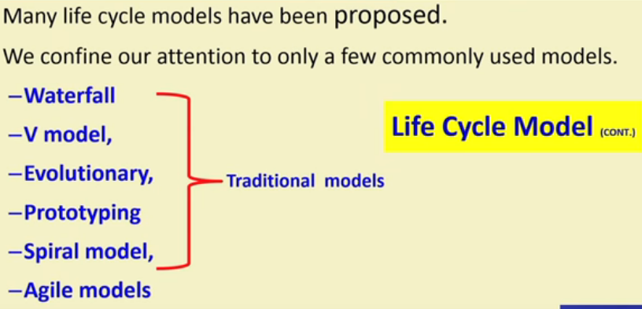

Quiz
Que : Why Life cycle model?
Ans:
- It's graphical and written description which helps
i) common understanding of activities among the software developers.
ii) to identify inconsistencies, redundancies, and omissions in the development process.
iii) in tailoring a process model for specific projects.
- In case of group project life cycle model standardizes the steps and duty of each and every person involved in the project development.
- The project manager can at any time fairly accurately tell, at which stage (e.g. , design, code, test, etc) the project is.
Que : What is the phase exit criteria for the software requirements specification phase?
Ans : Software requirements specification(SRS) document is complete, reviewed, and approved by the customer.
Que : How milestones help Software project managers?
Ans : - Track the progress of the project
- Phase entry and exit are important milestones.
